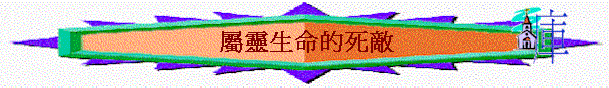

『我說，你們當順著聖靈而行，就不放縱肉體的情慾，因為情慾和聖靈相爭，聖靈和情慾相爭，這兩個是彼此相敵……情慾的事，都是顯而易見的，就如姦淫、污穢、邪蕩、拜偶像、邪術、仇恨、爭競、忌恨、惱怒、結黨、紛爭、異端、嫉妒、醉酒、荒宴等類……』加5：16-21
引言
聖經題及「相爭」、「相敵」、原來在我們屬靈生命裡有一個敵人，和聖靈作對，影響我們結不出美好生命的果子，就是「情慾」；「情慾」原來是神賜給人一份很好的禮物，人若沒有了情慾，就如活死人一樣，冰冷，沒感覺的，但人若不好好運用情慾，放縱它，就會成了「邪情私慾」，得罪神，所以聖經題醒我們不要放縱這個死敵--
---肉體的情慾，相反要順聖靈而行，就能得勝；究竟這個死敵的本相是怎樣呢？作為神的兒女又如何得勝它呢？讓我們從聖經看一看。
一、自然性慾
「性」本身是好的，但若任憑它，不控制它，就成了「姦淫、污穢、邪蕩」，我們要攻克己身，要己身服我：自己時常題醒自己，即使如大衛，有了家庭又屬靈，但若不儆醒，也會在這方面出錯；我們也要儆醒，要順聖靈而行，沒有污穢，反結出「良善」，不放縱，反而結出「節制」果子。
二、崇拜傾向
人類本身有一種慾念，是動物界沒有的，就是「崇拜」、「宗教」傾向，在此若扭曲了這崇高情意，就變成『拜偶像、邪術』，當然我們基督徒應沒有拜偶像的，但在生活，心中會否出現了神與人之間的「第三者」，我崇拜了某些東西，某些人物多過神呢？聖經教導我們要聽聖靈引導，要結「信實」果子。對我們的主一生一世忠誠，忠於祂，除祂以外，不能接受有『第三者』，我們有否這堅定心志？
三、情緒宣洩
人一出生就會發怒，會宣洩自己的情緒，但若放任它，加上了「恨意」，就成了「仇恨、爭競、忌恨、惱怒」，我自己也有脾氣，但時常題自己要「治服己心，不輕易發怒』，不要令它過份積蓄，含怒到日落，不知我們多不多發怒？若是，也會影響我們與家人、團友、同事相處；聖經教我們若多了「愛人如己」的愛，多順聖靈結「仁愛」、「喜樂」、「和平」、「忍耐」、「溫柔」、「恩慈」的果子時，怒自然消退。
四、追求認同
每個人都想在人群中被人認同，別人知道自己的存在，不過聖經郤叫我們不要貪圖虛名，否則，會因過份追求名，而產生「結黨、紛爭、異端、嫉妒」的惡果，有些人在教會中不開心的原因，是覺得被人忽略了意見，人不尊重自己，某些肢體得人留意，自己郤被冷落，而令自己不開心，不知我們會不會因「名」而不開心，最近，自己也要學，可不可以以「神為我的喜樂」，我的滿足不是一剎那的虛名，而是要得神的稱讚呢？要結出真正「喜樂」的果子，才能得著豐盛的生命！
五、肉體滿足
我很喜歡享受神所賜的美食，時常想吃一些未試過嘗的菜，但也要題自己，要節制，否則會落到聖經時代那種「醉酒、荒宴」光景，神賜的食物本是美，但不要被它所挾制，不要過份沉醉，荒廢寶貴光陰，也令身體受損。
因此聖經題及我們的死敵就是因放縱而產生的情慾了，今天我們在生活中，有沒有放縱呢？聖經教導的們要節制，也要順聖靈而行，當情慾發動時，留意內裡聖靈的聲音，聖靈說要「停」，就順聖靈而行，當然人也有軟弱，但我們不可喪志，若不灰心，到了時候，就要收成，失敗了，求主憐憫饒恕，重新努力，勝過它，以致我們的生命可以滿有聖靈所結的果子！努力！